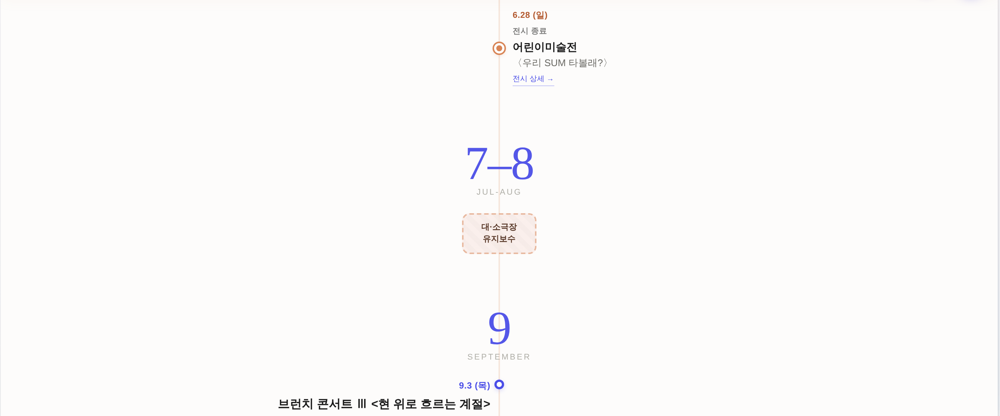
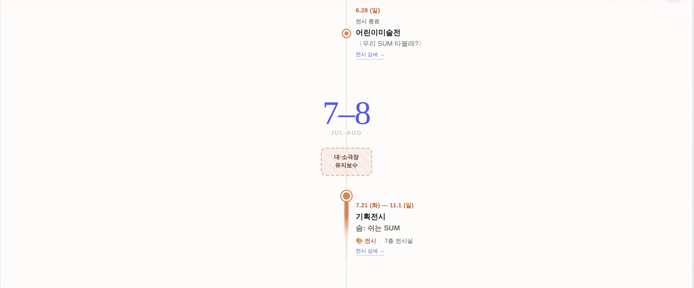
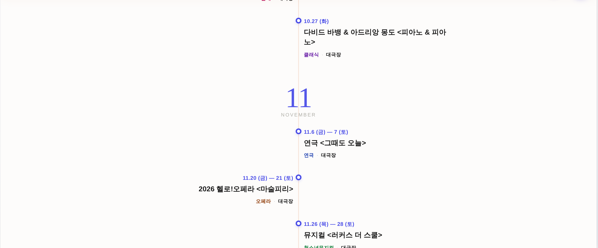
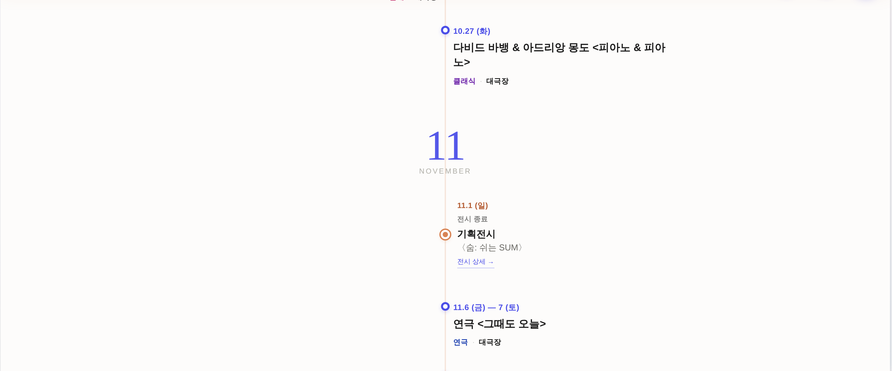
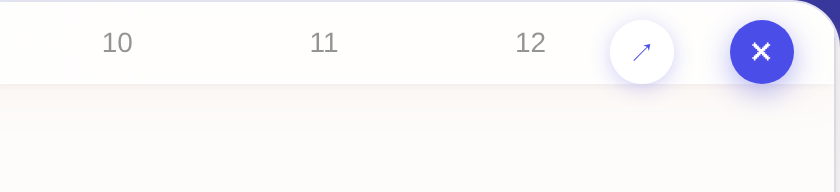
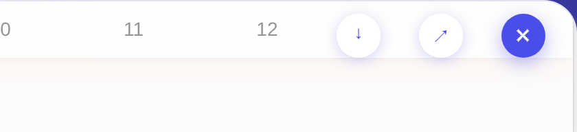
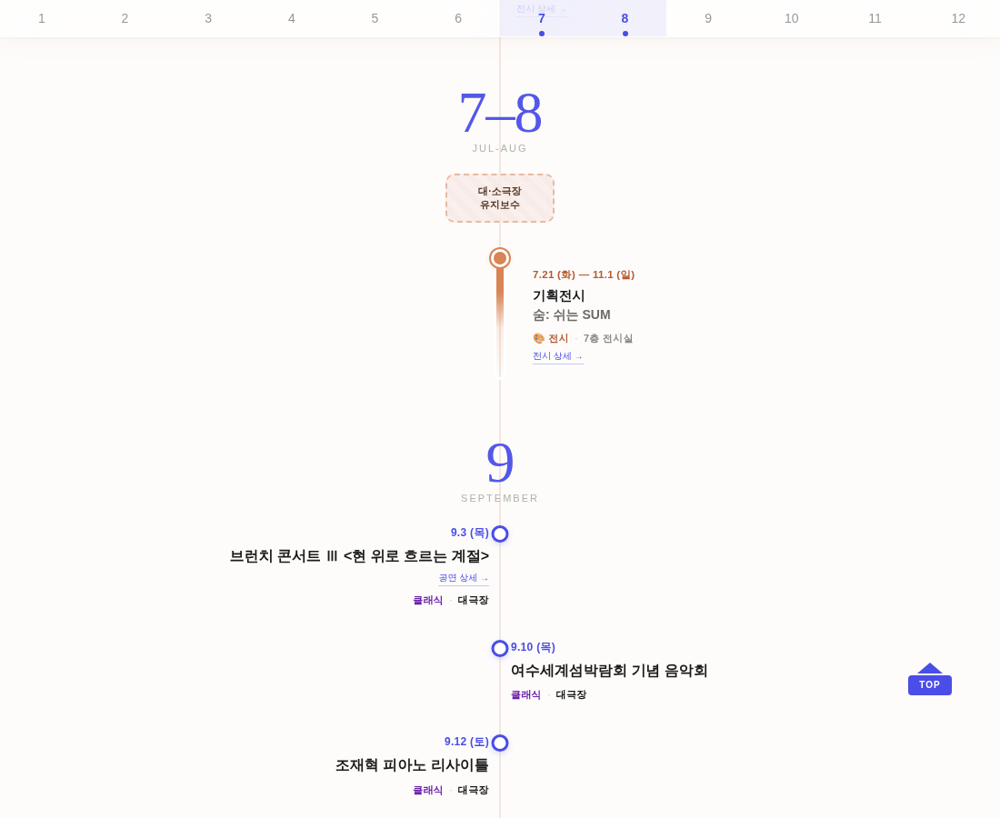
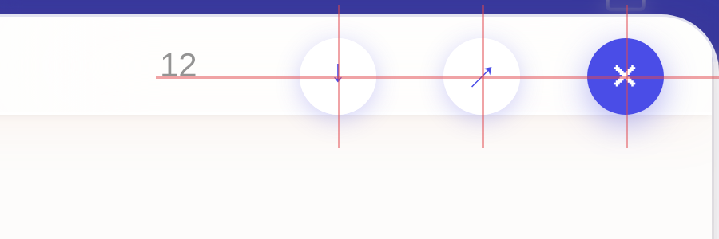
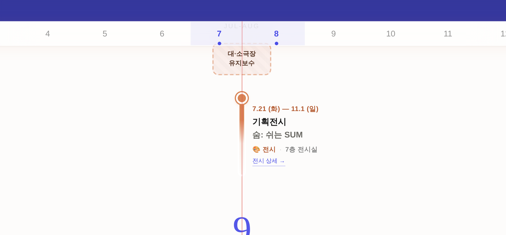

?annual 단독 페이지 · 실렌더(헤드리스 Chromium) 실측 첨부출처 = 프로그램 시트 NO 30 + 공식 사이트 exhibition/v/?u=236 대조 — 7.21(화)~11.1(일) · 7층 전시실.
서식은 기존 전시 2건(어린이미술전·장도 기획전시)의 띠(.yc-ex) + 종료점(.yc-ex-end) 한 쌍 구조를 그대로 계승했고, 같은 7층 전시실이라 좌우 배치도 어린이미술전과 같은 쪽(L)으로 뒀다. 신규 클래스·색 0.




파일명 = 2026_GS칼텍스_예울마루_연간일정_260731.html — 맨 끝이 오늘 날짜(_YYMMDD)라 저장할 때마다 자동으로 바뀐다.
저장본은 CSS·마크업을 화면에서 그대로 떠오기 때문에 사본을 따로 만들지 않는다(일정을 고치면 다음 저장본에 자동 반영). 월 네비 점프·등장 페이드·TOP 버튼도 그대로 동작.


저장된 HTML 파일을 그냥 열었을 때 — 앱 없이 단독으로 열리고, 새 전시도 그대로 들어있다.

| 축 | 측정 대상 | 측정값 | 판정 |
|---|---|---|---|
| 기하 — 가로 | 버튼 3개 간격 (↓↔↗, ↗↔✕) | 28.000px / 28.000px (피치 60px 균등) | Δ 0.00 |
| 기하 — 세로 | 버튼 3개 세로 중심 cy | 62.000 / 62.000 / 62.000 | Δ 0.00 |
| 기하 — 축 | 전시 띠·종료점 점 중심 vs 타임라인 중앙선 | 신규 2개 모두 Δ 0.000px (기존 4개와 동일) | Δ 0.00 |
| 기하 — 동급 | 전시 텍스트블록 좌변·글자크기 (L열) | x=699 / right=899 / 14.5px — 어린이미술전과 동일 | 일치 |
| 광학(잉크) | ↓ 글리프 잉크중심 (보정 전) | 기하중심보다 +2.313px 아래 · 형제와 3.063px 어긋남 | 불합격 |
| 광학(잉크) | ↓ 글리프만 translateY(-3px) 보정 후 | ↓ −0.688 / ↗ −0.750 / ✕ −0.400 → 3버튼 편차 0.350px | 합격 |
| 겹침 | 월 네비 「12」칸 vs 좌측 버튼 (1400px·390px) | 예약폭 100→174px(버튼 밴드 실측) · 이격 +2.0px | 무겹침 |
중심 십자선 캡처 — 왼쪽: 버튼 3개 기하중심(세로선) + 공통 중심선(가로선) / 오른쪽: 타임라인 중앙축과 전시 띠 점

